안전 설정 (ArduPilot)
안전 설정에서는 (기체별) 비상 안전 설정을 설정합니다.
설정 페이지에서는 가장 중요한 안전 옵션을 설정합니다. 다른 안전 장치 설정은 각 차량 유형에 대한 안전 장치 설명서에 설명된 매개변수를 통하여 설정할 수 있습니다.
QGroundControl은 ArduPilot에서 폴리곤 펜스 또는 랠리 포인트를 지원하지 않습니다.
콥터
콥터의 안전 페이지는 아래와 같습니다.
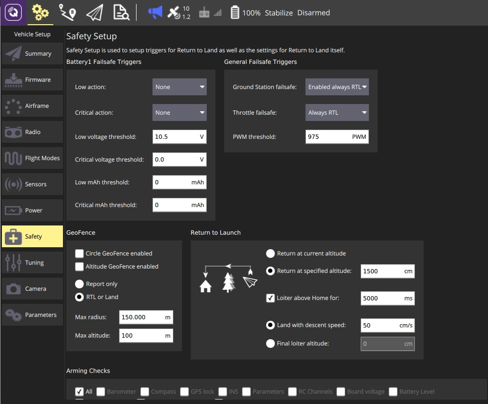
추가 안전 설정 및 정보는 안전장치를 참고하십시오.
배터리 안전장치
이 패널은 배터리 안전장치 매개변수를 설정합니다. 전압 및 남은 용량에 대해 낮거나 중요한 임계값을 설정하고 안전 장치 값이 위반되는 경우 조치를 정의할 수 있습니다. 임계값을 0으로 설정하여 비활성화할 수 있습니다.
두 번째 배터리가 있는 경우(전원 설정에서 활성화됨) 두 번째 패널이 동일한 설정으로 표시됩니다.
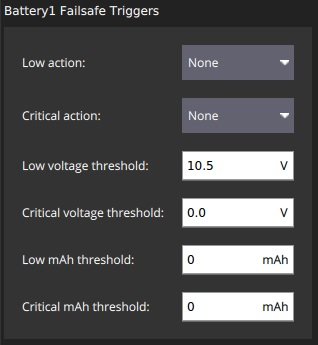
설정 옵션은 다음과 같습니다:
- Low action(BATT_FS_LOW_ACT) - 없음, Land, RTL, SmartRTL, SmartRTL 또는 Land, Terminate 중 하나를 선택합니다.
- Critical action(BATT_FS_CRT_ACT) - 없음, Land, RTL, SmartRTL, SmartRTL 또는 Land, Terminate 중 하나를 선택합니다.
- Low voltage threshold(BATT_LOW_VOLT) - 낮은 동작을 트리거하는 배터리 전압입니다.
- Critical voltage threshold<(BATT_CRT_VOLT)- 중요 작업을 트리거하는 배터리 전압입니다.
- Low mAh threshold(BATT_LOW_MAH) - 낮은 작업을 트리거하는 배터리 용량입니다.
- Critical mAh threshold(BATT_CRT_MAH) - 중요한 작업을 트리거하는 배터리 용량입니다.
일반적인 안전장치 트리거
이 패널은 GCS 안전장치를 활성화하고 스로틀 안전장치를 설정합니다.
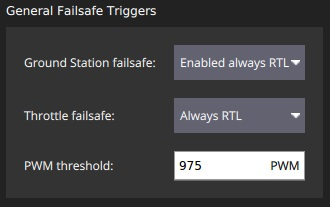
설정 옵션은 다음과 같습니다:
- Ground Station failsafe - 비활성화, 항상 RTL 활성화, 자동 모드에서 미션 계속 활성화, 항상 SmartRTL 또는 RTL 활성화, 항상 SmartRTL 또는 Land 활성화.
- Throttle failsafe - 비활성화됨, 항상 RTL, 자동 모드에서 미션 계속, 항상 착륙.
- PWM Threshold(FS_THR_VALUE) - 스로틀 페일세이프가 트리거되는 PWM 값입니다.
지오펜스
이 패널은 원통형 Simple Geofence에 대한 매개변수를 설정합니다. 울타리 반경 또는 높이 활성화 여부, 위반 최대값 및 위반 시 조치를 설정할 수 있습니다.
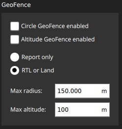
설정 옵션은 다음과 같습니다:
- Circle GeoFence enabled(FENCE_TYPE, FENCE_ENABLE) - 원형 지오펜스를 활성화합니다.
- Altitude GeoFence enabled(FENCE_TYPE, FENCE_ENABLE) - 고도 지오펜스를 활성화합니다.
- 울타리 작업(FENCE_ACTION) 다음 중 하나:
- 보고만 - 울타리 위반을 보고합니다.
- RTL 또는 Land - 출발지 복귀 또는 펜스 경계 착륙
- 최대 반경(FENCE_RADIUS) - 부서졌을 때 RTL을 유발하는 원형 울타리 반경.
- 최대 고도(FENCE_ALT_MAX)- 고도 지오펜스를 트리거하는 최대 고도를 표시합니다.
출발지 복귀
이 패널은 RTL 모드의 기능을 설정합니다.
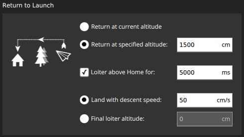
설정 옵션은 다음과 같습니다:
- RTL 복귀 고도 선택(RTL_ALT):
- 현재 고도에서 복귀 - 현재 고도에서 복귀합니다.
- 지정된 고도에서 복귀 - 현재 고도 미만인 경우 지정된 고도로 상승하여 복귀합니다.
- 집 위 배회(RTL_LOIT_TIME) - 착륙 전 배회 시간을 설정합니다.
- 다음 중 하나
- 하강 속도가 있는 착지(LAND_SPEED) - 최종 하강 속도를 선택합니다.
- 최종 배회 고도(RTL_ALT_FINAL) - RTL 또는 임무 후 착륙을 위한 최종 고도를 선택하고 설정합니다(착륙하려면 0으로 설정).
시동 검사
이 패널은 어떤 사전 ARM 안전 검사 활성 여부를 설정합니다.
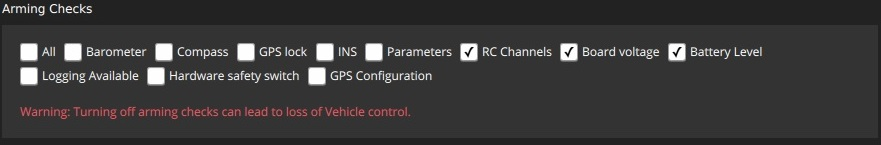
설정 옵션은 다음과 같습니다:
- 수행할 무장 점검(ARMING_CHECK) - 모든 적절한 점검: 기압계, 나침반, GPS 잠금, INS, 매개변수, RC 채널, 보드 전압, 배터리 잔량, 대기 속도, 사용 가능한 로깅 , 하드웨어 안전 스위치, GPS 구성, 시스템.
비행기
비행기의 안전 페이지는 아래와 같습니다.
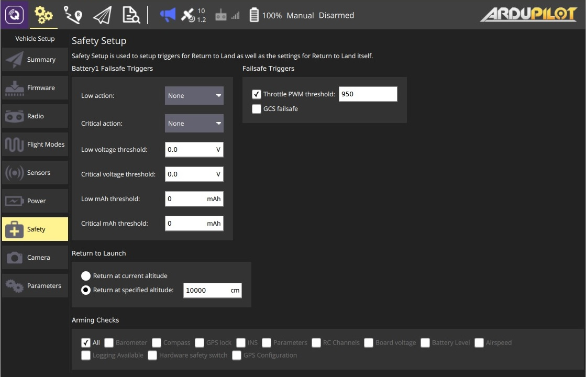
추가 안전 설정 및 정보는 비행기 안전 장치 기능 및 고급 안전 장치 설정을 참고하십시오.
배터리 안전장치
비행기 배터리 안전 장치는 낮음 및 치명적 작업(없음, RTL, 착륙, 종료)에 대해 다른 옵션이 있다는 점을 제외하고 헬리콥터와 동일합니다.
자세한 내용은 배터리 안전장치(콥터)를 참고하십시오.
안전장치 트리거
이 패널은 GCS 안전장치를 활성화하고 스로틀 안전장치를 설정합니다.
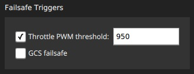
설정 옵션은 다음과 같습니다:
- 스로틀 PWM 임계치(THR_FS_VALUE) - 스로틀 페일세이프가 트리거되는 PWM 값입니다.
- GCS 비상안전장치(FS_GCS_ENABL) - GCS 비상안전장치를 활성화합니다.
출발지 복귀
이 패널은 RTL 모드의 기능을 설정합니다.
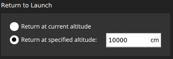
설정 옵션은 다음과 같습니다:
- RTL 복귀 고도 선택(RTL_ALT):
- 현재 고도에서 복귀 - 현재 고도에서 복귀합니다.
- 지정된 고도에서 복귀 - 현재 고도 미만인 경우 지정된 고도로 상승하여 복귀합니다.
시동 검사
시동 점검은 헬리콥터와 동일합니다.
로버
로버의 안전 페이지는 아래와 같습니다.
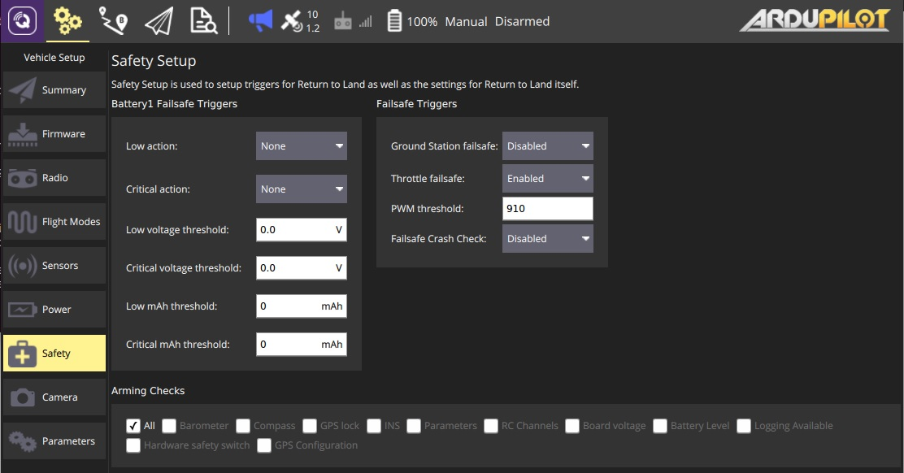
추가 안전 설정 및 정보는 비상안전장치를 참고하십시오.
배터리 비상안전장치
로버 배터리 비상안전장치는 콥터와 동일합니다.
비상안전장치 트리거
이 패널은 로버 비상안전장치를 활성화합니다.
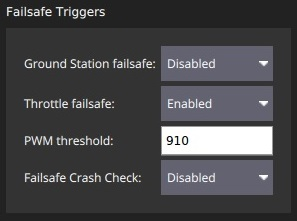
설정 옵션은 다음과 같습니다:
- 지상국 비상안전장치(FS_GCS_ENABL) - GCS 비상안전장치를 활성화합니다.
- 안전 장치 조절(FS_THR_ENABLE) - 안전 장치 조절을 활성화 또는 비활성화합니다(값은 아래 PWM 임계값).
- PWM Threshold(FS_THR_VALUE) - 스로틀 페일세이프가 트리거되는 PWM 값입니다.
- Failsafe Crash Check(FS_CRASH_CHECK) - 충돌 발생 시 수행할 작업: Disabled, Hold, HoldAndDisarm
시동 검사
시동 점검은 헬리콥터와 동일합니다.
잠수정
잠수정의 안전 페이지는 아래와 같습니다.
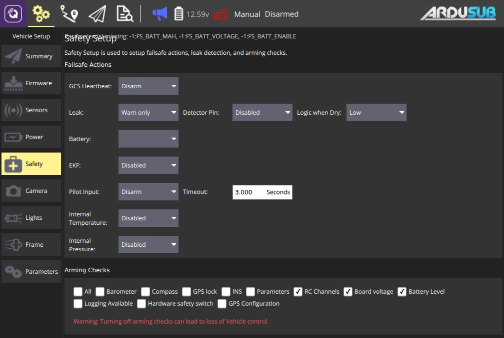
추가 안전 설정 및 정보는 비상안전장치를 참고하십시오.
비상안전장치 동작
설정 옵션은 다음과 같습니다:
- GCS 하트비트 - 비활성화, 경고만, 무장 해제, 수심 유지 모드로 들어가기, 수면 모드로 들어가기 중 하나를 선택합니다.
- 누출 - 사용 안 함, 경고만, 수면 모드로 전환 중 하나를 선택합니다.
- 검출기 핀 - 비활성화, Pixhawk Aux(1-6), Pixhawk 3.3ADC(1-2), Pixhawk 6.6ADC 중 하나를 선택합니다.
- 건조 시 논리 - 낮음, 높음 중 하나를 선택합니다.
- 배터리 - ?.
- EKF - 비활성화, 경고만, 무장 해제 중 하나를 선택합니다.
- 파일럿 입력 - 비활성화, 경고만, 무장 해제 중 하나를 선택합니다.
- 내부 온도 - 비활성화, 경고만 중 하나를 선택합니다.
- 내부 압력 - 비활성화, 경고만 중 하나를 선택합니다.
시동 검사
시동 점검은 헬리콥터와 동일합니다.